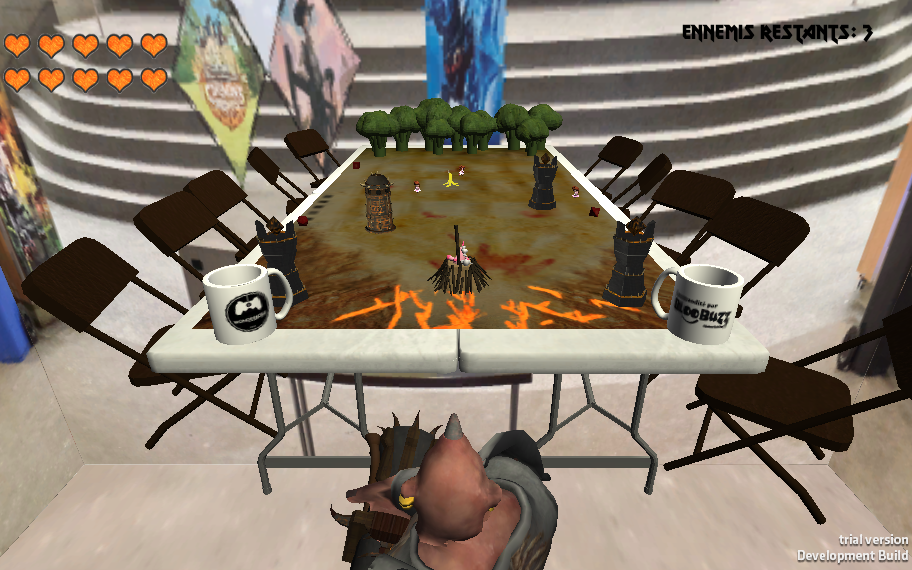

Viens que j't'écrase
Les petites poupées envahissent encore la table de jeu! Défendez la licorne et survivez le plus longtemps possible en tirant des tours et des bananes sur le plateau de jeu. Mais attention, car elles arrivent de plus en plus nombreuses!
Viens que j't'écrase est un jeu de style "Tower Defense" et "Shooter" ayant été conçu durant le WonderJam Hiver 2015 à l'Université du Québec à Chicoutimi. Le but étant de faire rire ses joueurs, le jeu accompli bien sa mission avec sa thématique farfelue et ses personnages loufoques.
Le jeu a été développé avec le moteur de jeu Unity. Tous les assets ont été créés par l’équipe, qui était composée de plusieurs artistes 3D provenant du NAD.